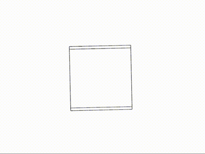
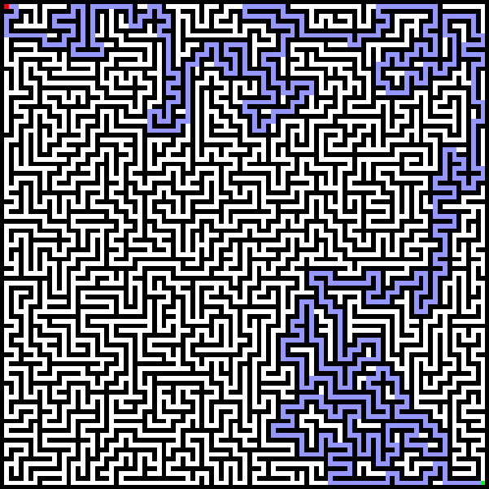

Visualizing n-cube geometry through dimensional projection
Physically-based path tracing with global illumination
Genetic algorithms evolving bipedal locomotion
GPU-accelerated fractal exploration with infinite zoom

Algorithmic maze generation and pathfinding visualization